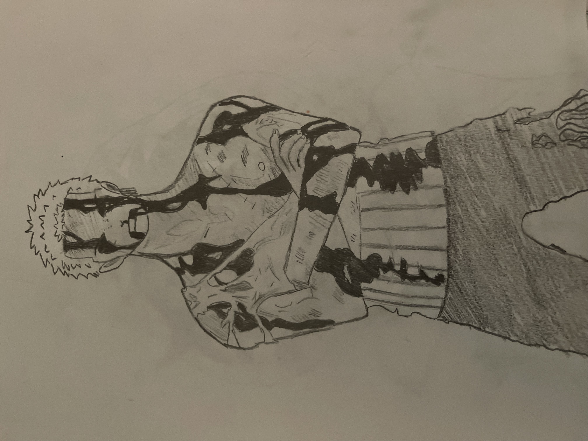
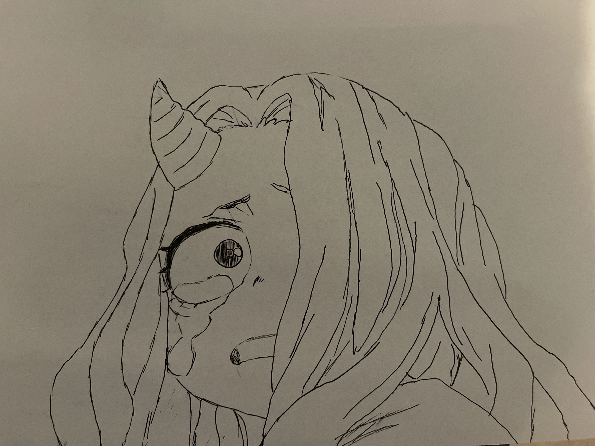
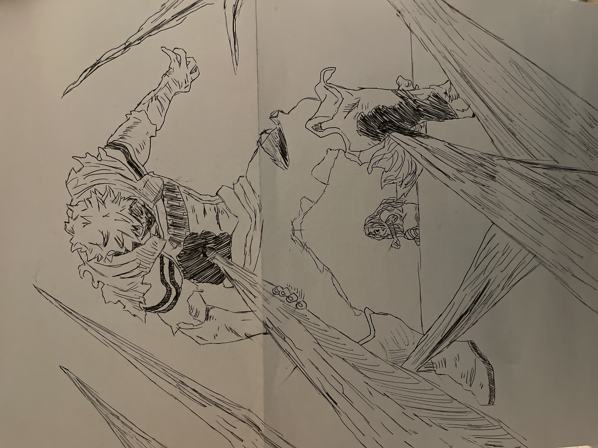
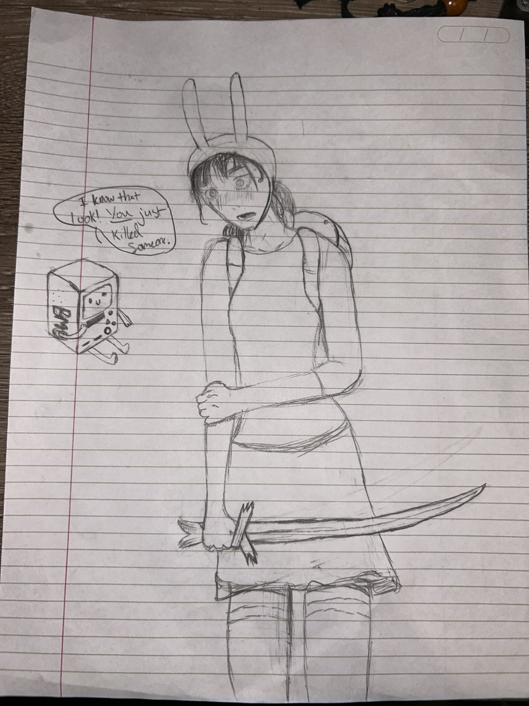

Visual Works
  Shown to the left are some drawings/tracings I have done over the years while I became more invested in anime/animation/keyframes. The top left is of Zoro from One Piece, with the right two top to bottom being Eri and Mirio from My Hero Acadamia respectively.
Another drawing by hand I've done was from last semester in one of my preliminary CTK courses, where we were tasked to emulate a piece of art with another, and I chose to draw one of my favorite characters in manga, Asa Mitaka, as Fiona from Adventure time!
For my Sound Design and Recording and Sampling classes this semester, I was tasked with taking any clip of animation and making a completely new sound folder for it that matches the content. Not only did I record about 50% of the sounds myself through various means of foley, I also did some of the voice work for this project! Overall this project is a bit of both categories, but the visual aspect is a huge part of it, showing the scene I tried to recreate with the sounds I collected.
For a Video editing class I took in the fall semester of 2024, we were tasked with creating a short film/video using all the techniques we earned throughout that semester, with the video "drive" being my final product!